- 제목 복사 → 새 글 제목에 붙여넣기
- 태그 복사 → 태그 칸에 붙여넣기
- 본문 전체 복사 후 본문에 붙여넣기
- 이미지 전체 사진첩에 저장 (공유창에서 '이미지 저장')
- 에디터에서 【사진 번호】 줄을 찾아 그 자리에서 사진 버튼 → 같은 번호 파일 선택 (자리표시 줄은 지우기)
- 카테고리·대표이미지 확인 후 발행
③ 본문 전체 복사
붙여넣을 내용 미리보기
산곡역자이힐스테이트앤하늘채는 인천 산곡동에서 무순위 550세대를 분양합니다. 전용 84㎡ 57세대의 가중평균 분양가는 9.68억 원이며 11월 24일 하루 접수합니다.
브동산 · 청약 언박싱 No.115 · 2026. 11. 20 (2026.11.19 무순위 공고 기준)
이 글 하단에는 네이버 쇼핑 커넥트 상품 링크가 있어요. 링크로 구매하면 브동산이 일정액의 수수료를 받아요.
산곡역자이힐스테이트앤하늘채 무순위 | 예상프리미엄 -480만, 분양가 평면 총정리
1. 결론부터 — 84㎡ 예상 프리미엄은 -480만원
인천 부평구 산곡6구역 산곡역자이힐스테이트앤하늘채에서 무순위 550세대가 나왔다. 최초 일반분양 1,289세대의 43%다.
무순위 84㎡ 57세대의 공급금액을 브동산 모형으로 따져봤다. 분양가가 적정가격과 거의 같게 나온다.
【사진 01】 · 적정가격 그래프 외 2장
2. 왜 이 가격이 나왔을까 — 입지와 가격 비교
입지: 7호선 산곡역 5·6번 출구 앞, 초등학교 두 곳을 낀 단지
공식 위치도에서 단지는 7호선 산곡역 5·6번 출구 바로 앞이다. 위치도에서 읽은 단지 중심에서 출구까지는 직선 약 260m다.
공식 배치도에서 인천산곡북초가 단지 동쪽, 인천마곡초가 서쪽에 붙어 있다. 서쪽으로는 원적산 녹지가 이어진다. 입지는 40점 만점에 30점이다.
【사진 02】 · 위치 개략도
SITE·비교단지·지하철역의 상대 위치를 나타낸 브동산 자체 제작 개략도. 축척과 거리는 실제와 다르다.
큰 상권인 부평역 일대까지는 직선 약 3km라 주거편의 점수는 중간이다. 7호선 청라 연장과 옛 1113부대 개발은 계획 단계라 점수에 넣지 않았다.
초등학교 배정은 공고문에 안내가 없어 확인하지 못했다. 공고문은 길주로·마장로와 원적산터널 요금소 쪽 소음 가능성도 밝혔다.
비교단지: 부평캐슬앤더샵퍼스트 · e편한세상부평역센트럴파크
비교단지는 가격을 보고 고르지 않고 정해진 기준으로 골랐다. 같은 동 이웃 한 곳, 가장 가까운 중심권 신축 대단지 한 곳이다.
이웃은 같은 산곡동에서 가장 새롭고 큰 부평캐슬앤더샵퍼스트(2024년 10월, 1,623세대)다. 중심권은 부평역 앞 신축 가운데 가장 가까운 e편한세상부평역센트럴파크(2024년 12월, 1,500세대)다.
더 가까운 부평두산위브더파크·쌍용더플래티넘부평은 규모와 브랜드 등급이 달라 뺐다. 청천동 e편한세상부평그랑힐스는 행정동이 다르고 규모가 커서 뺐다.
【사진 03】 · 평점 비교표
입지 40점·브랜드 20점·상품성 40점, 100점 만점 기준 브동산 모형 자체 산정.
종합평점은 SITE 80점, 부평캐슬앤더샵퍼스트 64점, e편한세상부평역센트럴파크 67점. 역세권 점수 차이가 커서 두 비교단지 시세를 각각 16%, 13% 올려서 반영했다.
【사진 04】 · 핵심 수치 박스
e편한세상부평역센트럴파크는 KB에 84㎡ 시세가 없어 리치고 32평형(전용 84.57㎡) 시세를 썼다(2026.11.20). 연령 보정은 SITE 입주예정월(2029.12) 기준 수도권 공식(상한 ×1.2)이다.
두 보정가격은 9.51억과 9.75억, 평균인 브동산 분석 적정가격은 9.63억원. 무순위 분양가 9.68억원과의 차이가 곧 예상 프리미엄 -480만원이다.
원 계산은 -890만원이었다. SITE는 아직 선분양 단계라 이미 지어진 비교단지보다 수요가 더 붙는 경향이 있어, 정성 항목을 조정해 폭을 절반 수준으로 줄였다.
59㎡·75㎡도 같은 방식으로 보면
무순위 물량의 절반 가까이가 59B(230세대)다. 같은 보정 배율로 59㎡와 75㎡도 계산해 봤다.
【사진 05】 · 핵심 수치 박스
59㎡는 두 비교단지 KB 시세(5.95억·5.90억), 75㎡는 가장 가까운 면적(72.63㎡ KB 6.98억·74.33㎡ 리치고 7.00억)을 썼다. 50㎡는 같은 면적대가 없어 계산하지 않았다.
84㎡는 적정가격과 비슷하지만, 59B와 75㎡는 4천만원 안팎 높다. 주력 물량일수록 가격 메리트가 약하다는 뜻이다.
3. 브동산 한줄평
예상 프리미엄 -480만 — 차익보다 산곡역 앞 대단지에 오래 살 무주택 실수요라면 84㎡는 해볼 만하다.
84㎡는 모형상 적정가격과 거의 같다. 선분양 수요를 감안하면 실거주로는 무리 없는 가격이다.
다만 84㎡ 무순위는 거의 다 1~4층이고, 모형은 저층 할인을 반영하지 않았다. 59B는 적정가격보다 약 3,930만원 높아 서두를 이유가 약하다.
4. 왜 550세대나 남았나 — 최초 청약 결과와 부평 최근 분양가
청약홈 경쟁률과 공고문으로 확인되는 사실만 옮겼다. 원인을 하나로 단정하지는 않는다.
① 특별공급부터 비었다. 685세대 배정에 접수는 406건이었다. 남은 물량이 넘어가 일반공급이 604세대에서 883세대로 늘었다.
【사진 06】 · 핵심 수치 박스
② 일반공급은 1대 1 안팎으로 겨우 마감됐다. 59B 1.05대 1, 84A 1.53대 1, 84B 2.09대 1(1순위 해당지역)이었다. 50A는 2순위 기타지역에서 1.00대 1로 마감됐다.
59A·59C는 2순위까지 미달됐다(△18·△128). 그래서 이번 무순위 대상에서 빠졌고, 그 물량을 어떻게 처리하는지는 확인하지 못했다.
③ 당첨자 다수가 계약하지 않았다. 공고문은 예비입주자까지 뽑고 남은 미계약분이라고 밝힌다. 이번 7개 타입은 최초 769세대 중 550세대가 남았다.
【사진 07】 · 핵심 수치 박스
최초 공급은 특별공급 포함 세대수(최초 입주자모집공고 2026.10.08 기준).
④ 분양가가 주변 신축 시세보다 높다. 최초 최고가는 59B 7.80억, 84B 10.32억원이었다. 같은 산곡동 부평캐슬앤더샵퍼스트(2024년 준공) KB 시세는 59㎡ 5.95억, 84㎡ 7.88억원이다.
⑤ 큰 평형 일반분양은 저층 위주였다. 최초 공고에서 84㎡ 일반분양 83세대 중 80세대가 1~4층이었다. 좋은 층 상당수가 조합원분으로 간 재개발 단지의 구조다.
부평에서 최근 분양한 단지의 최고 분양가도 옮겨 적었다. 입지와 시점이 달라 그대로 견주기는 어렵다.
【사진 08】 · 핵심 수치 박스
청약홈 공고 상세의 타입별 최고 공급금액. 발코니 확장비·옵션·취득세 제외. 해링턴스퀘어산곡역도 84B·84C는 1순위 해당지역에서 미달됐다.
최고가끼리 견주면, 바로 옆 해링턴스퀘어산곡역보다 1년 반 뒤 분양하면서 59㎡는 약 1.7억, 84㎡는 약 1.8억 높게 나왔다. 산곡동 일대는 해링턴스퀘어산곡역(2,475세대) 등 재개발 입주도 이어진다.
5. 분양 사이트 자료로 한 번에 보기
무순위 550세대 중 84㎡는 57세대뿐이라, 84A·84B의 동·라인과 층부터 확인해야 한다.
타입별 분양가 정리
【사진 09】 · 핵심 수치 박스
공고문의 층별 공급금액과 세대수로 계산한 값. 발코니 확장비(59B 1,920만·84A 2,190만·84B 1,840만원 등)·옵션·취득세는 포함하지 않았다.
【사진 10】 · 핵심 수치 박스
59B 6~10층(44세대) 공급금액 기준. 중도금은 이자후불제 대출 알선 예정이지만, 대출이 안 되면 직접 내야 한다. 무순위 계약일 기준으로 이미 지난 중도금 회차는 없다.
입지
【사진 11】 · 입지 정보 외 3장
【사진 12】 · 동·호수 배치 외 2장
【사진 13】 · 커뮤니티
【사진 14】 · 평면 외 1장
【사진 15】 · 평면도 75A 외 1장
【사진 16】 · 평면도 59B 외 1장
【사진 17】 · 평면도 50B 외 1장
6. 결론
84㎡ 무순위는 적정가격과 거의 같아 예상 프리미엄은 -480만원이다. 차익보다 산곡역 앞 대단지에 살 무주택 실수요라면 검토할 만하고, 59B는 적정가격보다 약 3,930만원 높다는 점을 감안하자.
자세한 평가표와 적정가격 산출 과정은 브동산 홈페이지에서 확인하실 수 있습니다.
본 글은 정보 제공 목적이며 투자 권유나 청약·매수 대행이 아니다. 실제 청약·계약 전에는 청약홈 입주자모집공고와 공식 안내를 확인해야 한다.
부동산 공부할 때 곁에 두면 좋은 것
[쇼핑커넥트 상품: 부동산 투자 입문서 — 미분양·선착순 계약 전 기초 공부]
[쇼핑커넥트 상품: 레이저 거리측정기 — 현장·사전점검에서 실측]
[쇼핑커넥트 상품: 사전점검 키트(수평계·마스킹테이프) — 입주 전 하자 체크]
④ 사진 자리표시 ↔ 파일
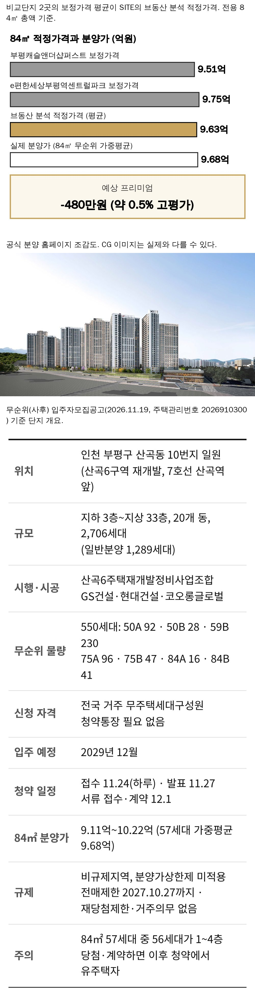

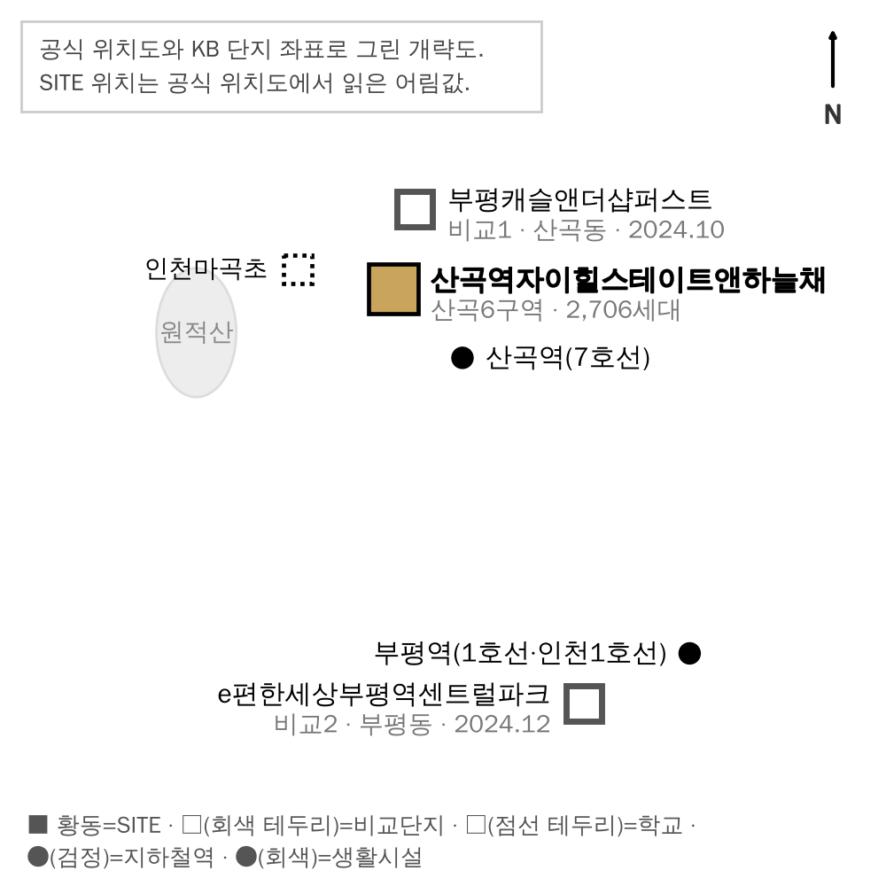

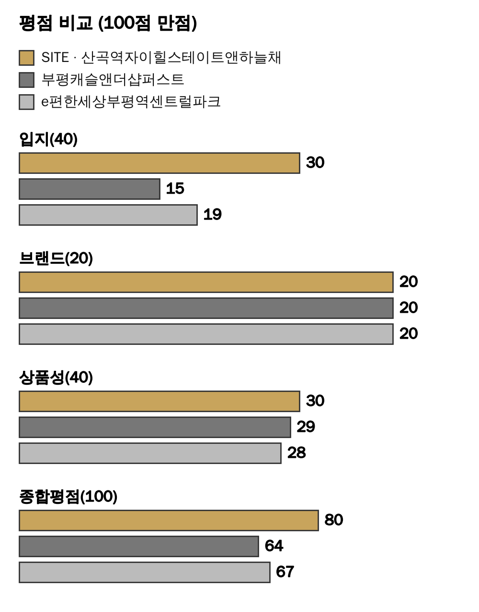

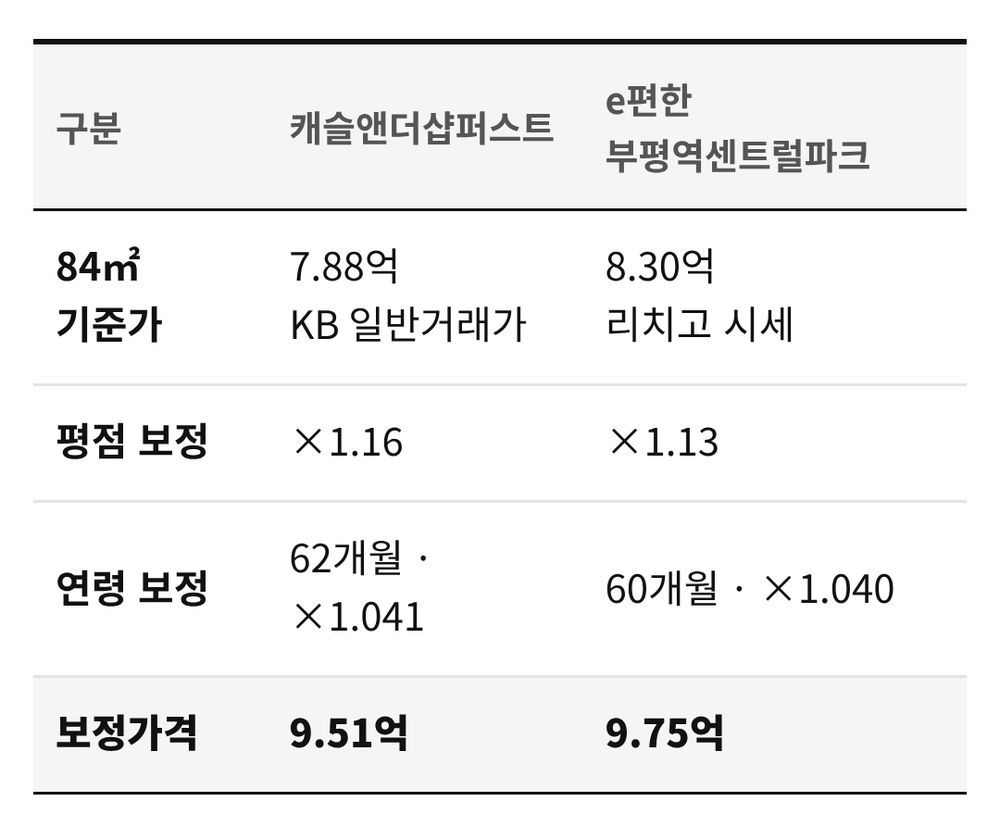

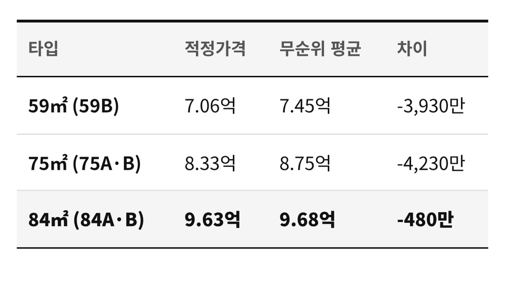

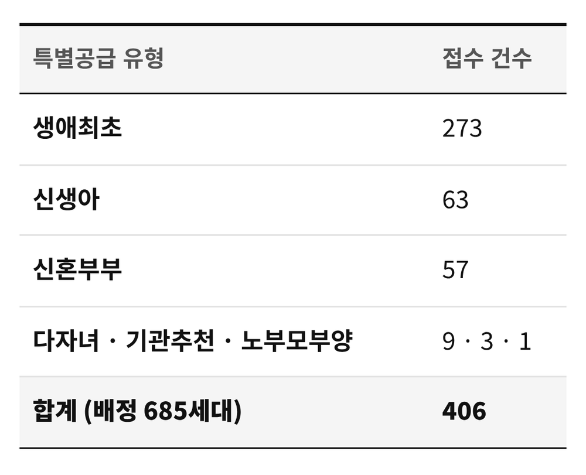

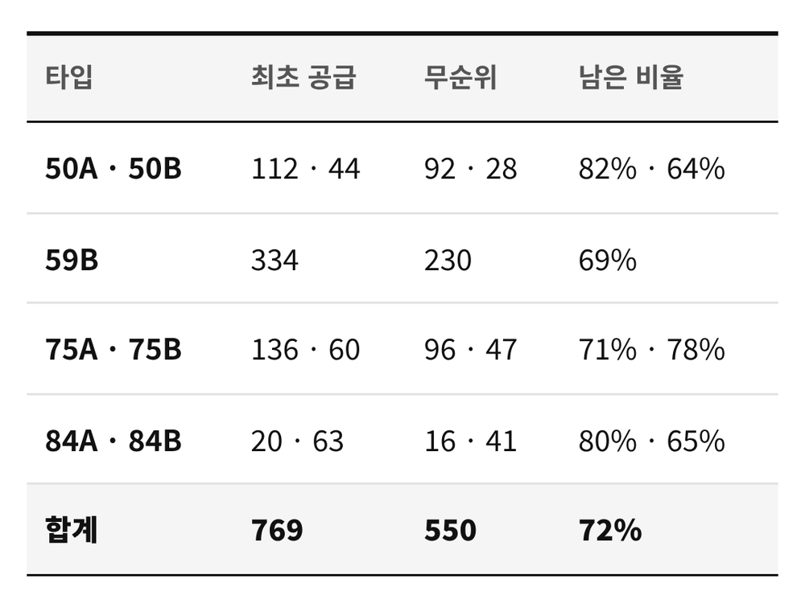

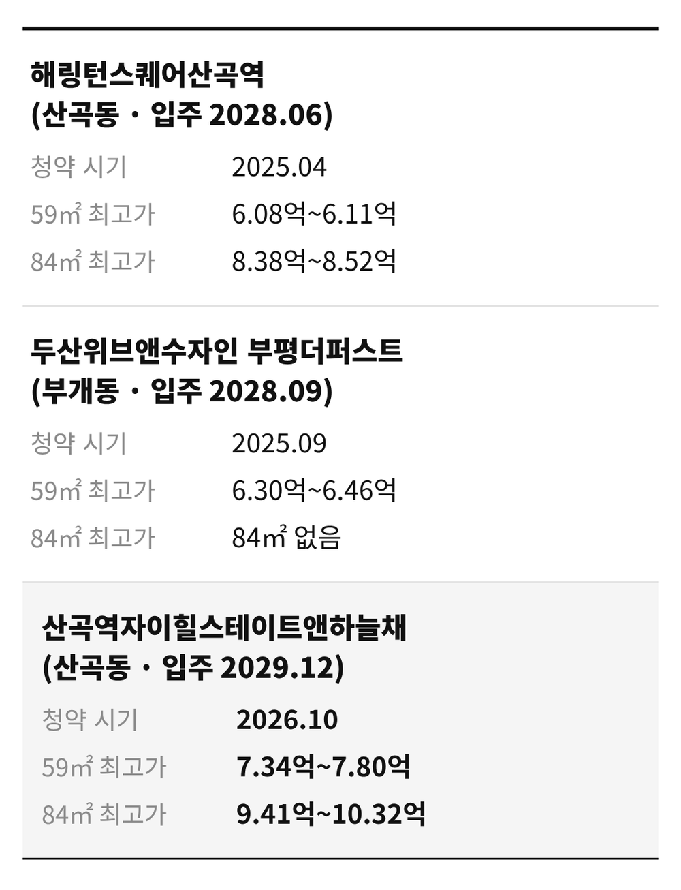

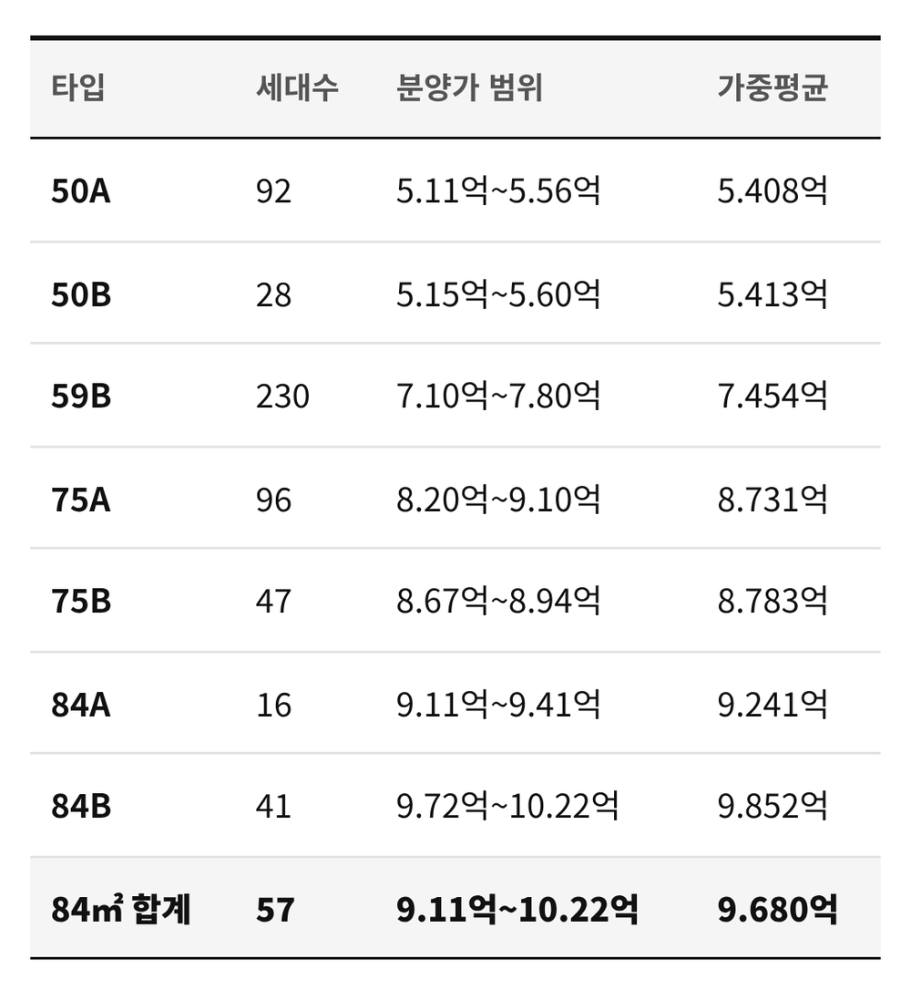

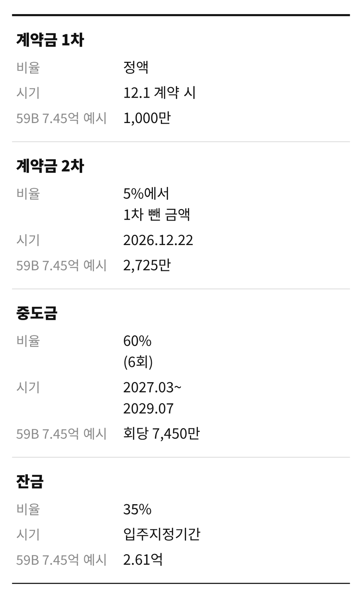

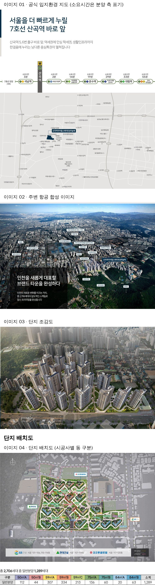

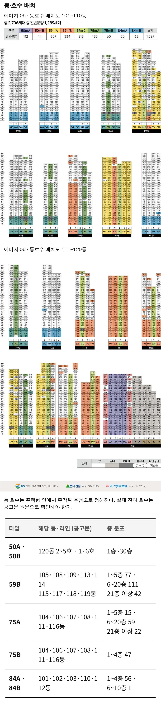

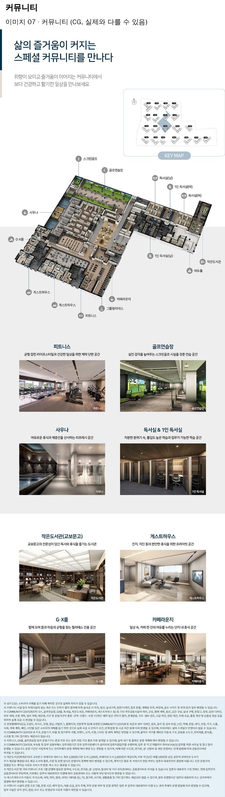

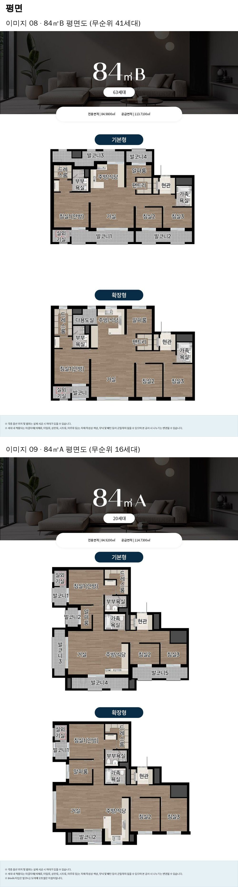

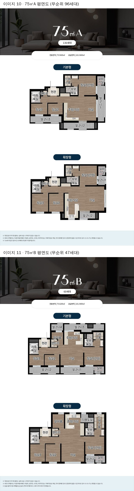

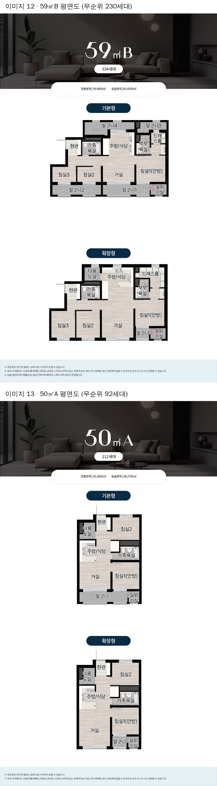

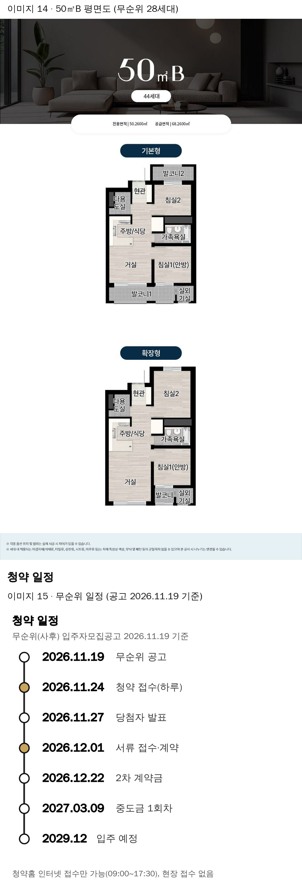

- 카테고리: 부동산이야기
- 제목 · 태그 입력 확인
- 대표 이미지(썸네일): aerial.jpg, chart-map-naver.png
- 【사진】 자리표시 줄이 모두 지워지고 사진으로 바뀌었는지 훑어보기
- 발행 버튼